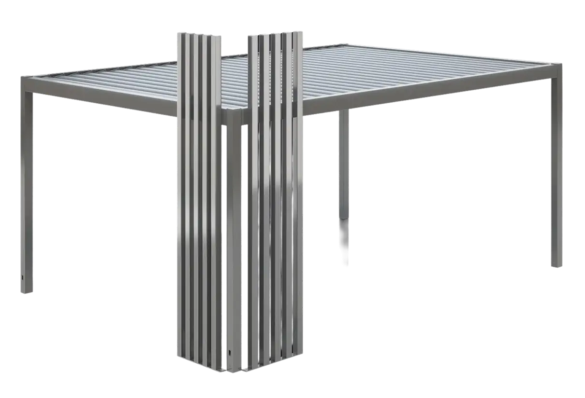

Okomiti dekorativni profili za moderne pergole — naglašavaju arhitekturu konstrukcije i povećavaju privatnost prostora na otvorenom.

Vertoline je elegantan sustav okomitih dekorativnih profila namijenjen modernim pergolama. Konstrukciji daje dojam lakoće, naglašava njezinu arhitekturu i povećava privatnost u prostoru na otvorenom. Zahvaljujući minimalističkom obliku i mogućnosti modularnog proširenja jednako se dobro uklapa u suvremene vrtove i terase uz stambene i poslovne objekte.
Svaki modul Vertoline sastoji se od 5 okomitih dekorativnih profila dimenzija 40 × 50 mm. Profili su raspoređeni na fiksnom razmaku od 60 mm, što daje skladan i ujednačen izgled cijele konstrukcije.
Modul ima čvrsto postolje učvršćeno u tlo, dok je gornji dio profila pričvršćen izravno na gornji okvir pergole.
Sustav je osmišljen za maksimalnu fleksibilnost. Pojedinačni moduli mogu se slobodno kombinirati dodavanjem novih panela, čime se dobivaju veće dekorativne ili zaštitne površine prilagođene potrebama korisnika.
Okomiti profili dostupni su u dekorima s imitacijom drva, koji pergoli daju prirodan i elegantan izgled. Ostali konstrukcijski elementi su plastificirani, što osigurava ujednačen izgled i visoku trajnost.
Podaci proizvođača (Aluprof).
Prema podacima proizvođača, Vertoline je kompatibilan s pergolama SB350, SB400, SB450 i SB550. Za provjeru mogućnosti ugradnje uz odabrani model pergole javite nam se upitom.
33 boje iz Aluprofove palete te 6 dekora s imitacijom drva. Dekori označeni zvjezdicom (*) naplaćuju se dodatno.
Boje su okvirni prikaz na ekranu — točan uzorak provjerite uz službenu RAL/Aluprof karticu prije narudžbe. Oznake završne obrade: MAT — mat, SATIN — satin, STR — struktura.